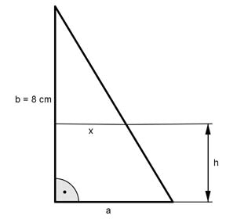
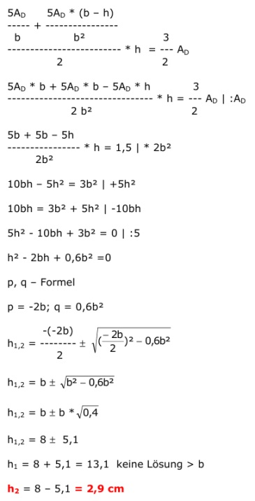

Flächenberechnungen Aufgabe 90 Wie groß muss h sein, wenn sich die Fläche des Trapezes zur Fläche des darüber liegenden Dreiecks wie 3 : 2 verhält?  Fläche des kleinen Dreiecks = AD Fläche des Trapezes = AT AT 3 ---- = --- |*AD AD 2 3 AT = --- AD 2 a * b ------ = AT + AD 2 a * b 3 ------- = --- AD + AD |*2 2 2 a * b = 3AD + 2AD | :b 5AD a = ----- 2 Strahlensatz: a : x = b : (b – h) a b --- = ------- x b - h Über Kreuz multipliziert: a * (b – h) = x * b |:b a * (b – h) ------------- = x b a + x ------- * h = AT 2 a und x ersetzt: 